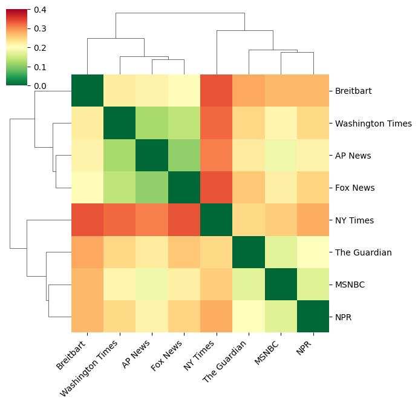
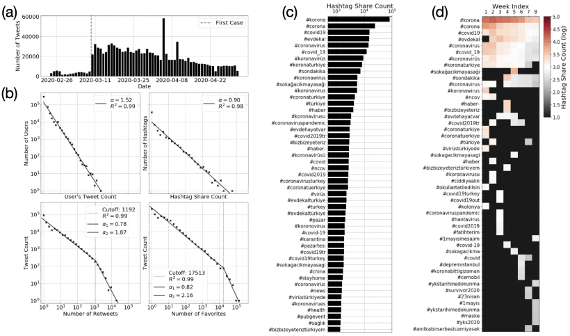
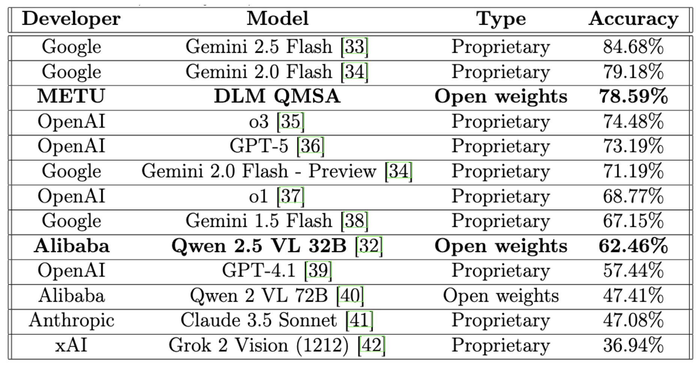

YKSBench accepted for poster presentation at NeurIPS 2025 (LLM Evaluation Workshop). dataset · paper
Predicting system dynamics of pervasive growth patterns in complex systems published in Nature Scientific Reports (2025). paper
Hubs, Authorities & Moral Framing in Media — poster presentation at Complex Networks 2025.
Built a 161.4M‑token multimodal reasoning corpus and fine‑tuned Qwen‑2.5‑VL‑32B. Resulting in accuracy gains on YKSUniform: 62.46% → 78.59% (ranked 3rd). Under review. project details
Released YKSUniform dataset & project site. dataset · site
Complex Systems — Modeling Dynamics of Change
At NECSI (Yaneer Bar‑Yam, Alfredo Morales), I studied how local behavior yields global phenomena: segregation, polarization, growth, and logistics. Methods: networks, RL/ABM,
statistical learning.
Hubs, authorities and moral framing in media
Complex Networks, 2025Network analysis

Study focusing on why of media bias rather than how. GDELT‑scale 2024 US election news coverage: outlets cluster by moral authorities; actors emerge as hubs, values as authorities. Introduced a framework for understanding narrative‑driven polarization.
Unified sigmoid‑based model forecasts adoption/saturation in business and policy (e.g., customer purchases, legislation). Early prediction of turning points. Contributed the team on developing the mathematical models.
Linking covid-19 perception with socioeconomic conditions using twitter data
IEEE Transactions on Computational Social Systems, 2021Topic modeling

This study analyzes 1.3 million Turkish COVID-19 tweets, revealing a shift from news to hygiene and anxiety themes after the first national case, shaped by users’ social networks.
Applied AI — Data‑Centric Intelligence for Science
I design multimodal benchmarks and run large‑scale training to improve reasoning in VLMs. I’m excited by protein/genomic modeling, astronomy, and Earth observation, where models support discovery and
interpretability.
Closing the Performance Gap: Data-Centric Fine-Tuning of Vision Language Models for the Standardized Exam Questions
Under reviewMultimodal reasoningFSDP

Curated 161.4M-token reasoning corpus with SFT. Increased performance of an open-source model on par with top proprietary models. Accuracy on YKSUniform: 62.46% → 78.59% (rank 3). SFT on 8xH200 GPUs with FSDP.
Sert, E., & Ertekin, Ş. (2025). YKSBench: Stress-testing multimodal models with exam-style questions. NeurIPS 2025 Workshop on Evaluating the Evolving LLM Lifecycle: Benchmarks and Beyond.
Hedayatifar, L., Morales, A. J., Saadi, D. E., Rigg, R. A., Buchel, O., Akhavan, A., ... & Sert, E. (2025). Predicting system dynamics of pervasive growth patterns in complex systems. Scientific Reports, 15(1), 33854.
Sert, E., Okan, O., Özbilen, A., Ertekin, Ş., & Özdemir, S. (2021). Linking COVID-19 perception with socioeconomic conditions using Twitter data. IEEE Transactions on Computational Social Systems, 9(2), 394–405.
Sert, E., Bar-Yam, Y., & Morales, A. J. (2020). Segregation dynamics with reinforcement learning and agent-based modeling. Scientific Reports, 10(1), 11771.
Sert, E., Hedayatifar, L., Rigg, R. A., Akhavan, A., Buchel, O., Saadi, D. E., Kar, A. A., & Morales, A. J. (2020). Freight time and cost optimization in complex logistics networks. Complexity, 2020(1), 2189275.
Tosun, N., Sert, E., Ayaz, E., Yılmaz, E., & Göl, M. (2020). Solar power generation analysis and forecasting real-world data using LSTM and autoregressive CNN. Proceedings of the 2020 International Conference on Smart Energy Systems and Technologies (SEST).
Sert, E., Sönmez, C., Baghaee, S., & Uysal-Biyikoglu, E. (2018). Optimizing age of information on real-life TCP/IP connections through reinforcement learning. Proceedings of the 26th Signal Processing and Communications Applications Conference (SIU).
Sert, E., Ertekin, Ş., & Halici, U. (2017). Ensemble of convolutional neural networks for classification of breast microcalcification from mammograms. Proceedings of the 39th Annual International Conference of the IEEE Engineering in Medicine and Biology Society (EMBC).
Media & Talks
Conference Presentations
ETH Zurich (ICCSS 2021, virtual)
MIT (ICCSS 2020, virtual)
Complex Networks (2020)
IEEE SIU (2018)
IEEE EMBC (2017)
Teaching
TA, NECSI Winter School (MIT, 2019)
Tutor, “Deep Learning: Hands On” (12‑week series, METU, 2017)
Awards
Best Lightning Presentation, Complex Networks (2020)